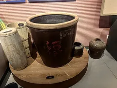
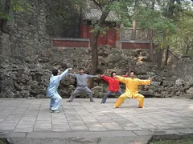
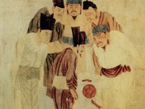
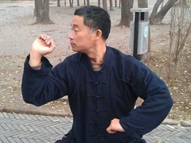

非遗图鉴 / 江湖百戏
06
非遗图鉴 · 传统体育、游艺与杂技
江湖百戏
传统体育、游艺与杂技 · 109 项、166 子项 · 第 1 / 2 页（Ⅵ-1 至 Ⅵ-60）
每一条只列名录上的事实：编号、名称、申报地区或单位、公布年份和批次。详情看中国非物质文化遗产网的官方页。在名录检索里查这一门类 →
- Ⅵ-1
吴桥杂技
- 河北省吴桥县2006 第一批 · 新增项目官方页 →

沧州博物馆藏吴桥杂技道具图：Baomi / CC BY-SA 4.0 / 维基共享资源。本站已缩放裁切，按 CC BY-SA 4.0 同样许可共享。 - Ⅵ-2
聊城杂技
- 山东省聊城市2006 第一批 · 新增项目官方页 →
- Ⅵ-3
- Ⅵ-4
抖空竹
- 北京市宣武区2006 第一批 · 新增项目官方页 →
- Ⅵ-5
维吾尔族达瓦孜
- 新疆维吾尔自治区2006 第一批 · 新增项目官方页 →
- Ⅵ-6
- Ⅵ-7
少林功夫
- 河南省登封市2006 第一批 · 新增项目官方页 →
- Ⅵ-8
武当武术
- 湖北省十堰市2006 第一批 · 新增项目官方页 →
- Ⅵ-9
回族重刀武术
- 天津市2006 第一批 · 新增项目官方页 →
- Ⅵ-10
- Ⅵ-11
太极拳
- 太极拳（杨氏太极拳）河北省永年县2006 第一批 · 新增项目官方页 →
- 太极拳（陈氏太极拳）河南省焦作市2006 第一批 · 新增项目官方页 →
- 太极拳（武氏太极拳）河北省永年县2008 第二批 · 扩展项目官方页 →
- 太极拳（吴氏太极拳）北京市大兴区2014 第四批 · 扩展项目官方页 →
- 太极拳（李氏太极拳）天津市武清区2014 第四批 · 扩展项目官方页 →
- 太极拳（王其和太极拳）河北省任县2014 第四批 · 扩展项目官方页 →
- 太极拳（和氏太极拳）河南省温县2014 第四批 · 扩展项目官方页 →
- 太极拳（孙氏太极拳）北京市西城区2021 第五批 · 扩展项目官方页 →
- 太极拳（孙氏太极拳）河北省保定市2021 第五批 · 扩展项目官方页 →
- 太极拳（吴氏太极拳）上海市2021 第五批 · 扩展项目官方页 →

Martial arts is a popular pastime in China. This photo of a Chen style Taijiquan class w…图：me (w:User:pfctdayelise) / CC BY-SA 2.5 / 维基共享资源。本站已缩放裁切，按 CC BY-SA 2.5 同样许可共享。 - Ⅵ-12
- Ⅵ-13
沙河藤牌阵
- 河北省沙河市2006 第一批 · 新增项目官方页 →
- Ⅵ-14
朝鲜族跳板、秋千
- 吉林省延边朝鲜族自治州2006 第一批 · 新增项目官方页 →
- Ⅵ-15
达斡尔族传统曲棍球竞技
- 内蒙古自治区莫力达瓦达斡尔族自治旗2006 第一批 · 新增项目官方页 →
- Ⅵ-16
- Ⅵ-17
蹴鞠
- 山东省淄博市2006 第一批 · 新增项目官方页 →

《宋太祖蹴鞠图》：体育史家认为这幅画上六人，分别为赵匡胤、赵光义、赵普、石守信、党进、楚昭辅。（最初由宋代画家苏汉臣所绘，原作已佚，此为元代画家钱选临摹之作）图：钱选 / Public domain / 维基共享资源。本站已缩放裁切。 - Ⅵ-18
- Ⅵ-19
- Ⅵ-20
蒙古族象棋
- 内蒙古自治区阿拉善盟2008 第二批 · 新增项目官方页 →
- Ⅵ-21
- Ⅵ-22
沙力搏尔式摔跤
- 内蒙古自治区阿拉善左旗2008 第二批 · 新增项目官方页 →
- Ⅵ-23
峨眉武术
- 四川省峨眉山市2008 第二批 · 新增项目官方页 →
- Ⅵ-24
红拳
- 陕西省2008 第二批 · 新增项目官方页 →
- Ⅵ-25
- Ⅵ-26
- Ⅵ-27
鹰爪翻子拳
- 河北省雄县2008 第二批 · 新增项目官方页 →
- Ⅵ-28

A picture of master Zhou Jingxuan, holding a Baji Quan posture. 2012, Tianjin, China.图：Jonathan.bluestein / CC BY 3.0 / 维基共享资源。本站已缩放裁切。 - Ⅵ-29
- Ⅵ-30
- Ⅵ-31
五祖拳
- 福建省泉州市2008 第二批 · 新增项目官方页 →
- Ⅵ-32
查拳
- 山东省冠县2008 第二批 · 新增项目官方页 →
- Ⅵ-33
- Ⅵ-34
苌家拳
- 河南省荥阳市2008 第二批 · 新增项目官方页 →
- Ⅵ-35
- Ⅵ-36
- Ⅵ-37
马球
- 马球（塔吉克族马球）新疆维吾尔自治区塔什库尔干塔吉克自治县2008 第二批 · 新增项目官方页 →
- Ⅵ-38
- Ⅵ-39
满族二贵摔跤
- 河北省隆化县2008 第二批 · 新增项目官方页 →
- Ⅵ-40
鄂温克抢枢
- 内蒙古自治区鄂温克族自治旗2008 第二批 · 新增项目官方页 →
- Ⅵ-41
挠羊赛
- 山西省忻州市2008 第二批 · 新增项目官方页 →
- Ⅵ-42
- Ⅵ-43
- Ⅵ-44
叼羊
- 叼羊（维吾尔族叼羊）新疆维吾尔自治区巴楚县2008 第二批 · 新增项目官方页 →
- Ⅵ-45
土族轮子秋
- 青海省互助土族自治县2008 第二批 · 新增项目官方页 →
- Ⅵ-46
左各庄杆会
- 河北省文安县2008 第二批 · 新增项目官方页 →
- Ⅵ-47
- Ⅵ-48
建湖杂技
- 江苏省建湖县2008 第二批 · 新增项目官方页 →
- Ⅵ-49
东北庄杂技
- 河南省濮阳市2008 第二批 · 新增项目官方页 →
- Ⅵ-50
宁津杂技
- 山东省宁津县2008 第二批 · 新增项目官方页 →
- Ⅵ-51
马戏
- 马戏（埇桥马戏）安徽省宿州市埇桥区2008 第二批 · 新增项目官方页 →
- Ⅵ-52
风火流星
- 山西省太原市2008 第二批 · 新增项目官方页 →
- Ⅵ-53
- Ⅵ-54
调吊
- 浙江省绍兴市2008 第二批 · 新增项目官方页 →
- Ⅵ-55
苏桥飞叉会
- 河北省文安县2008 第二批 · 新增项目官方页 →
- Ⅵ-56
拦手门
- 天津市河东区2011 第三批 · 新增项目官方页 →
- Ⅵ-57
通背缠拳
- 山西省洪洞县2011 第三批 · 新增项目官方页 →
- Ⅵ-58
地术拳
- 福建省精武保安培训学校2011 第三批 · 新增项目官方页 →
- Ⅵ-59
佛汉拳
- 山东省东明县2011 第三批 · 新增项目官方页 →
- Ⅵ-60